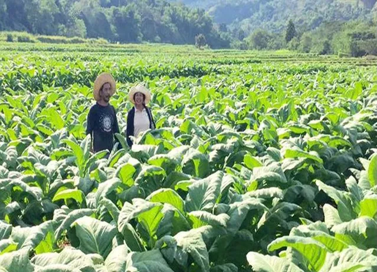
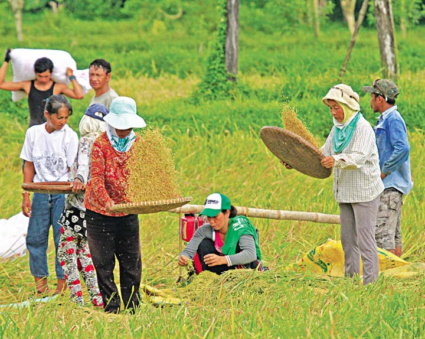

The people are engaged in farming, producing food crops, mostly rice, corn, vegetable, root crops, and fruits. Non-food crops include tobacco, cotton, and tigergrass. Cottage industries include loom weaving, furniture making, jewelry making, ceramics, blacksmithing, and food processing.
 